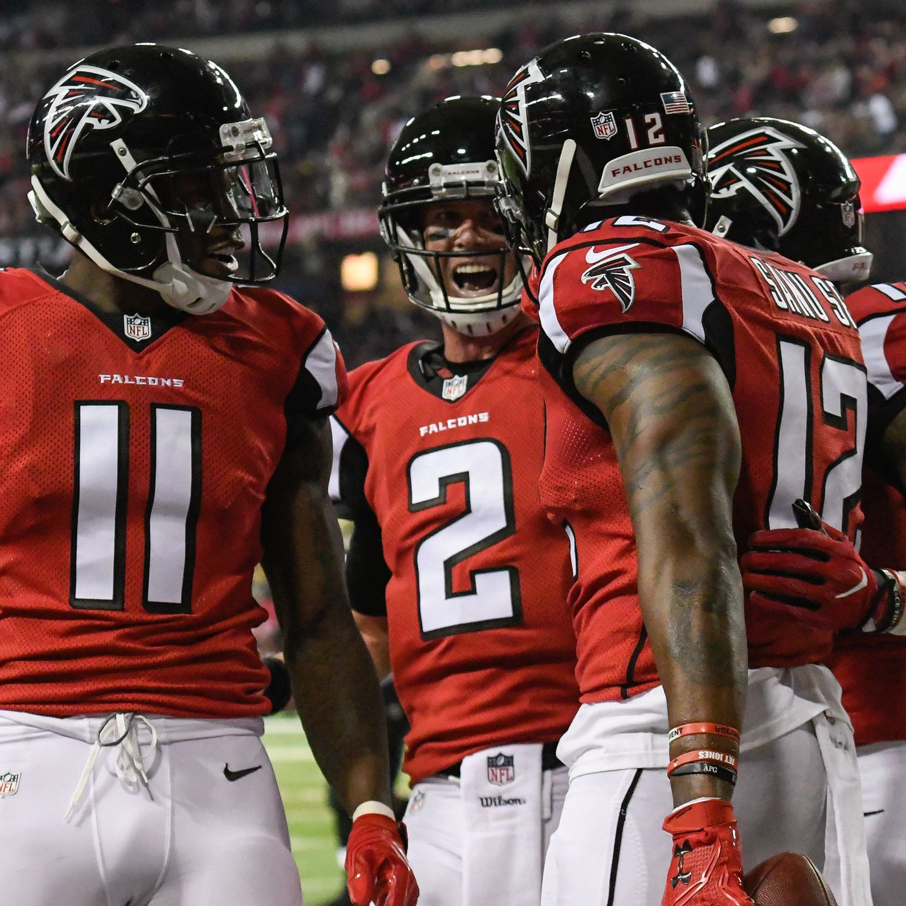
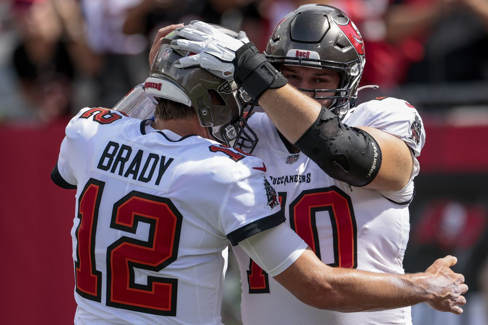

The Saints biggest rival throughout history, the Atlanta Falcons. Their first meeting took place in 1967, with the Saints getting the first victory in this fierce match-up. The Falcons curently have an advantage in the head-to-head, winning 53 games compared to the saints 51 games.
The Saints next biggest rival in their division, the Carolina Panthers have been around for a shorter period of time than the Falcons. The first match between both teams took place in 1995, with the Panthers winning. The saints currently hold the all time record vs the panthers, winning 29 games and losing 26.

The Tampa Bay Buccaneers are the third and final rival in the Saints division. The first match between these two teams took place in 1977, with a Buccaneers victory. Since then, the Saints have dominated the head to head, winning 39 matches and losing 20.
